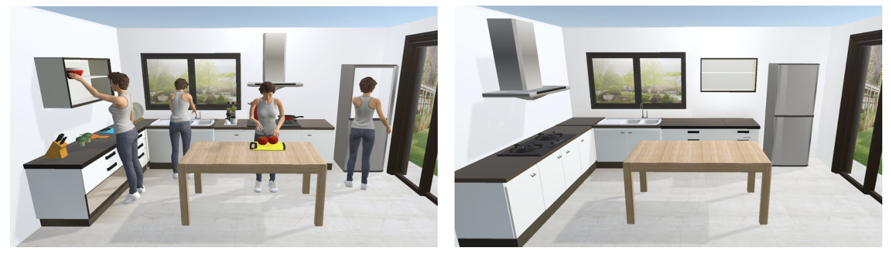

Functional Workspace Optimization via Learning Personal Preferences from Virtual Experiences
Wei Liang1 Jingjing Liu1 Yining Lang1 Bing Ning2 Lap-Fai Yu3
1Beijing Institute of Technology 2Beijing Institute of Fashion Technology 3George Mason University

Abstract
The functionality of a workspace is one of the most important considerations in both virtual world design and interior design. To offer appropriate functionality to the user, designers usually take some general rules into account, e.g., general workflow and average stature of users, which are summarized from the population statistics. Yet, such general rules cannot reflect the personal preferences of a single individual, which vary from person to person. In this paper, we intend to optimize a functional workspace according to the personal preferences of the specific individual who will use it. We come up with an approach to learn the individual personal preferences from his activities while using a virtual version of the workspace via virtual reality devices. Then, we construct a cost function, which incorporates personal preferences, spatial constraints, pose assessments, and visual field. At last, the cost function is optimized to achieve an optimal layout. To evaluate the approach, we experimented with different settings. The results of the user study show that the workspaces updated in this way better fit the users.
Publication
Functional Workspace Optimization via Learning Personal Preferences from Virtual Experiences
Wei Liang,
Jingjing Liu,
Yining Lang,
Bing Ning,
Lap-Fai Yu
IEEE Transactions on Visualization and Computer Graphics (Special Issue on IEEE Virtual Reality 2019)
Paper
, Video
BibTex
@article{wei2019functional,
title=
{Functional Workspace Optimization via Learning Personal Preferences from Virtual Experiences},
author = {Liang, Wei and Liu, Jingjing and Lang, yining and Ning, Bing and Yu, Lap-Fai},
journal = {IEEE Transactions on Visualization and Computer Graphics},
volume = {25(5)},
pages = {1836 - 1845},
year = {2019},
publisher = {IEEE}
}

- 媒体计算与智能系统实验室
- Media Computing and Intelligent Systems Lab
Beijing Institute of Technology Copyright Address: 5 South Zhongguancun
Street, Haidian District, Beijing Postcode: 100081